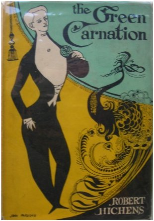
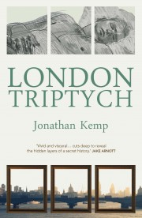

{kind=link}

"Discovering Wilde and Genet as a teenager was quite explosive..."
Jonathan, you’re on the shortlist for the first Green Carnation with your first published novel – congratulations! You’ve got three distinct voices in London Triptych, and three distinct worlds, but London is clearly a unifying theme. What aspect of the city did you especially want to capture?
I wanted to capture a hidden London, a secret and very sexual cartography of the city that is often occluded, marginalised, and ignored. It was very important to me that the nocturnal and erotic aspects of the city were delineated and represented.
Obviously spreading over three different time periods must have involved a huge amount of research, which was the hardest to research and was there a particular period which was your favourite? How much pressure is there to get things as factually correct as possible or because its fiction can you get away with a little bit more?
Jack Rose’s London was the most difficult to research, as there is so little in the history books about male prostitution at that time. I was able to research the 1950s quite well not only via books and newspapers from the period but also talking to gay men who lived through that decade, defiantly defining a sexual subculture at that time in the face of huge repression and oppression from society. And for David I was able to draw from my own experiences of the city (I moved here in 1989) and those of my friends.
I think Jack Rose’s London, as a consequence, became my favourite to write, because I was able to have a lot of fun making stuff up, riffing from the bare facts I was able to unearth and constructing a mythical, imagined city in which to place him.
I didn’t feel any pressure to be factually accurate because in a very real sense fiction means telling lies, and novels construct their own universes to a certain degree. Obviously, there were hard material facts to be addressed, especially concerning the Wilde trials – things I couldn’t change or play around with – but on the whole I felt a huge amount of freedom to make up the lives of these men and thereby get to their truth.
Although those London’s are distinct, there are subtle resonances and ties between them: an echo chamber of story and desire. Do you see yourself as part of a continuum of queer writers, a relay race of fiction and testimony – and if so, is that echo chamber of yours a model of that continuum?
I think all writers develop or emerge as writers in relation to previous generations of writers whose work has informed and influenced them. For me, discovering Wilde and Jean Genet as a teenager was quite explosive. I’d always wanted to write, but their words and worlds sang to me in ways I’m still fathoming. In many ways you can’t get two more different queer writers – one interested in artifice, the other in recounting his own experiences – yet both invest their projects with the idea that words make worlds, that language can sing, and this was what fascinated me and drew me towards them. Later on, Neil Bartlett’s enterprise of capturing hidden aspects of gay London gave me a way to see how the city I lived in was full of stories. With London Triptych I definitely tried to work with the idea of echoes resonating across lives and across a century, a convoluted genealogy linking David to Wilde.
There’s lots and lots of sex in the novel – much of it good, a little of it sad, some of it surreal and fantastical. Interestingly, the Man Booker Judges said they hadn’t had enough sex this year – as it were – so do gay writers have more to say on the subject? Why is it so integral to London Triptych?
I don’t think gay writers have more to say on the subject. Perhaps we benefit from the fact that gay sex is still in some sense ‘outside the norm’. I don’t know. I think society still finds sexually explicit material unsettling if it occurs outside of the safety of a specific genre, ie, pornography. I wanted very much to mess around with that idea. It was absolutely crucial that London Triptych include sexually explicit material, not just because it is a novel about prostitution, but because I think we are, to the core, sexual beings, and there is little in the mainstream that directs or expresses that in an intelligent way. I believe there is a great deal of knowledge in the sexual, and I was hugely informed by many writers before me, both gay and straight, for whom desire and language were interconnected obsessions.
The brothel-keeper, Alfred Taylor, is a fantastic creation. Was he fun to write? And where did my favourite character, the lady Mayor come from? Could we have a whole book about her, please?
Alfred Taylor did actually exist, and was a friend of Wilde’s and was convicted along with him, though we don’t know what happened to him on his release from prison. He would procure and supply boys for Wilde and at the sentencing it was stated he undoubtedly ran a male brothel, when in truth he would simply pass boys onto Wilde. I ran with the idea of the male brothel, and took huge poetic license with Taylor (though his past as given in the novel is correct: he was in the Royal Fusiliers and did fritter away a large inheritence). I made him much older, and invented a character for him that is larger than life, a kind of queer Fagin. He was bald, chubby and thirty years old in real life, though very effeminate and bold, thinking nothing of chatting up lads in public places like the Café Royal. He was enormous fun to write.
The Lady Mayor of Camden was also based on a real person, the mother of George Cayford, the artist whose wonderful drawing graces the cover of London Triptych. Dame Florence Cayford was an amazing woman, and I wanted to use some of the stories I’d heard from George about her. She was a staunch socialist, fighting for workers’ rights, unionizing working women such as nurses, and setting up the GLC. As far as a whole book about her, we’ll have to see…..
What would you nominate as a ‘lost Green Carnation’, a work by a gay male writer that deserves wider recognition?
That’s a tough one, as there are so many. I think I’d have to nominate Jean Genet’s Our Lady of the Flowers because of the way it puts into language for the first time a poetic and highly erotic world of homosexual life without apology or recourse to sociological import. He creates his own cosmology of queer desire and brings it to startlingly intense life.
What are you reading at the moment?
I’m currently reading Colum McCann’s Let The Great World Spin. I enjoyed his novel on Nureyev, Dancer, enormously and this new one is about – amongst other things – Philippe Petit, the man who walked between the Twin Towers in 1974. I love his prose and his imagination is immense. I’m also reading several books on Malaysia for my next novel.
As to that, what are you working on at the moment?
My next novel, entitled Hannah Rose. It’s very, very different to London Triptych. I can’t really say any more about it at the moment.
More about the novel…

London Triptych
{kind=link}
A novel by Jonathan Kemp
Published by Myriad Editions
What’s it about?
Kemp’s novel mixes the stories of three men separated by decades: happy-go-lucky Jack Rose, rent boy in the Victorian underworld; Colin, a closeted painter in the 1950s; an unnamed narrator in the 1990s. What unites them is desire: transforming and forbidden – and what’s more dangerous: falling in love…
What they say
‘As the connections and reflections across the years reveal themselves, this is a book that will make you think – and make you feel’ – Neil Bartlett
Opening lines
Another arrest reported in the papers this morning. Some poor sod caught in a public toilet. Hardly a week goes by without one. Now, I can’t claim to know much about it, but it seems to me that when old men hang around public toilets while younger men are pissing, we aren’t out for a glimpse of cock, or even a grope. No, in truth what roots us to the spot is the most profound feeling of envy because we can’t piss like that anymore. Respect, even. When you reach fifty, it trickles out.
You can buy London Triptych here at Amazon.co.uk, and see a terrific reading of Jack’s first encounter with Alfred Taylor (by David Hoyle and Mitch Jamieson) here
STOP PRESS:
Max Schaefer interview coming later this evening!